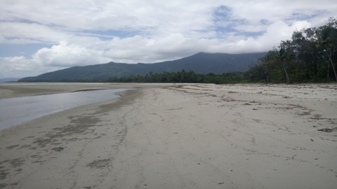

Mittwoch, 24. Oktober 2018
13:04 Uhr Frankfurt
12:04 Uhr London
07:04 Uhr
New York 20:04 Uhr Tokio
Berlin 11 MI 8° /12° DO 7° /13°
Sport
Sporttabellen
- Bundelsliga
- Bundesliga
- Liga
- DFB-Pokal
- Champions League
- Europa League
- Lälnderspiele
- Prem.League
- Prim Division
- SerieA
- Ligue 1
- Alle Ligen
Der Sport-Tag
16:12 Lothar Matthäus:" An Löwen muss man nicht zweifeln"

Gewinnt Hamilton jetzt die WM?
Aus der Chancenlosigkeit greift Vettel an
Ausgerechnet auf Lewis-Hamilton-Terrain muss Sebastian Vettel versuchen,
die Entscheidung im Kampf um den WM-Titel in der Formel 1 aufzuschieben.
Auch wenn die Wende unmöglich scheint, sieht der deutsche Ferrari-Star darin eine Chance.
Politik
Musikfestival im Visier des IS
Behörden vereiteln Anschlag in Deutschland
Drei Teams der Terrormiliz Islamischer Staat sollen nach Deutschland reisen,
um einen Anschlag auf ein Musikfestival zu verüben.
Doch dazu kommt es nicht. Eine Informantin des Verfassungsschutzes bringt die Sicherheitsbehörden auf die Spur der möglichen Attentäter.
Wirtschaft
Geschäfte mit den Saudis

Es geht um viel Geld
Der saudische Kronprinz war bisher ein Glücksfall für ausländische Unternehmen.
Doch sein Image bekommt nach dem Verschwinden des Oppositionellen Khashoggi ergebliche
Kratzer - und zwingt Geschäftspartner, sich kräftig zu verbiegen. Von Jan Gänger
Unterhaltung
Sesamstraße verliert Legende

Bibo-Darsteller hängt Kostüm an den Nagel
Zweieinhalb Meter groß, gelb und fast 50 Jahre alt - das ist Bibo aus der Sesamstraße.
Der Dar Darsteller in dem Kostüm des Riesenvogels zieht nun einen Schlussstrich - mit einem lachenden und einem weinenden Auge.
Wissen
Frisches Gemüse für Astronauten?

Fliegendes Gewächshaus kreist um die Erde
Dass Pflanzen ohne Schwerkraft im Weltraum wachsen können, haben Experimente auf der ISS bewiesen.
Mit einem Gewächshaus im All wollen Forscher nun beobachten, wie gut Astronauten künftig bei Missionen mit frischem Gemüse versorgt werden können.
Technik
Wohnzimmer-Spaß für Jung und Alt

Super Mario Party liefert Minispiel-Wahnsinn
In Super Mario Party darf wieder gepuzzelt, gebastelt, gesammelt und draufgehauen werden - Verbrüderungen und Intrigen mit inbegriffen.
Die Videospielreihe macht nun erstmals auf der Nintendo Switch halt und begeistert nicht nur Kids. Von Michael Bauer
Wetter
Wetterbericht für Deutschland (21.10.2018): Im Norden zieht erster Regen auf
Der Sonntag zeigt sich anfangs im äußersten Südosten mit mehr Wolken. In den meisten Regionen ist es nach Nebelauflösung aber oft locker bewölkt oder sonnig. Im Nordwesten ziehen später teils dichte Wolken auf und gegen Abend kann es hier ersten Regen geben. Die Höchstwerte erreichen 11 bis 20 Grad. Der Wind weht überwiegend schwach, an der See mäßig bis frisch.
Im Norden aus Südwest bis West, nach Südwesten hin aus Nordost.
In der Nacht zum Montag zieht von der Nordsee ein schwaches Regenband auf.
In der Mitte und im Süden ist es überwiegend leicht bewölkt bis klar und noch trocken. Die Tiefstwerte liegen zwischen 12 und -3 Grad, mit den tiefsten Werten in Franken. Schwacher, zu den Küsten hin mäßiger bis frischer Westwind, im Süden aus unterschiedlichen Richtungen.Am Montag zieht das Regenband weiter in die Mitte. Dahinter stellt sich ein Wechsel aus Sonne und Wolken ein. Nach Süden hin ist es nach einzelnen Nebelfeldern oft sonnig oder höchstens locker bewölkt und trocken. Auch an der Ostsee gibt es längere heitere Abschnitte. Die Höchstwerte erreichen 10 bis 18 Grad.
Im Süden weht ein schwacher Nordostwind, sonst ein schwacher bis mäßiger Nordwestwind.
Wie es mit dem Wetter weitergeht, erfahren Sie im 7-Tage-Trend.Wussten Sie, dass der 16. Oktober der Welttag des Brotes ist? Hier bekommen Sie spannende Fakten zur deutschen Brotkultur.

